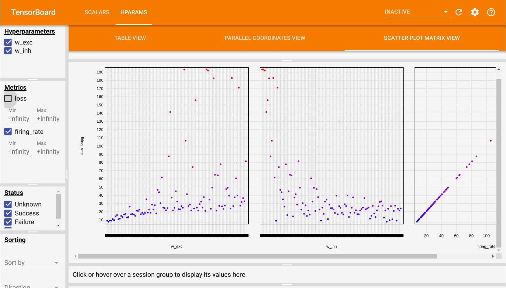

Hyperparameter optimization#
Download the Jupyter notebook : BayesianOptimization.ipynb
Most of the work in computational neuroscience is to guess the values of parameters which are not constrained by the biology. The most basic approach is to simply try out different values, run the simulation, reason about why the results are not what you want, change some parameters, run again, etc. It is very easy to get lost in this process and it requires a great deal of intuition about how the model works.
If you are able to define an objective function for your model (a single number that tells how well your model performs), you can use search algorithms to find this hyperparameters automatically, at the cost of running your model multiple times.
Let's take the example of a rate-coded model depending on two hyperparameters a and b, where is the objective is to have a minimal activity after 1 s of simulation (dummy example):
from ANNarchy import *
pop = Population(...)
...
compile()
def run(a, b):
pop.a = a
pop.b = b
simulate(1000.)
return (pop.r)**2
Grid search would iterate over all possible values of the parameters to perform the search:
min_loss = 1000.
for a in np.linspace(0.0, 1.0, 100):
for b in np.linspace(0.0, 1.0, 100):
loss = run(a, b)
if loss < min_loss:
min_loss = loss
a_best = a ; b_best = b
If you try 100 values for each parameters, you need 10000 simulations to find your parameters. The number of simulations explodes with the number of free parameters. Moreover, you cannot stop the search before the end, as you could miss the interesting region.
Random search samples blindly values for the hyperparameters:
min_loss = 1000.
for _ in range(1000):
a = np.random.uniform(0.0, 1.0)
b = np.random.uniform(0.0, 1.0)
loss = run(a, b)
if loss < min_loss:
min_loss = loss
a_best = a ; b_best = b
If you are lucky, you may find a good solution quite early in the search, so you can stop it when the loss is below a desired threshold. The main drawback is that the search may spend a lot of time in uninteresting regions: it does not learn anything between two samples.
An often much more efficient search method is Bayesian optimization (also called sequential model-based optimization - SMBO). It is a form of random search that updates beliefs on the hyperparameters. In short, if some parameter values do not lead to good values of the objective function in early samples, they will not be used in later samples. The search becomes more and more focused on the interesting regions of the hyperparameter space.
As always with Python, there are many libraries for that, including:
hyperopthttps://github.com/hyperopt/hyperoptoptunahttps://github.com/pfnet/optunatalos(for keras models) https://github.com/autonomio/talos
This notebook demonstrates how to use hyperopt to find some hyperparameters of the COBA models already included in the ANNarchy examples:
https://annarchy.readthedocs.io/en/stable/example/COBA.html
Additionally, we will use the tensorboard extension to visualize the dependency between the parameters and the objective function.
from ANNarchy import *
from ANNarchy.extensions.tensorboard import Logger
clear()
setup(dt=0.1)
COBA = Neuron(
parameters="""
El = -60.0 : population
Vr = -60.0 : population
Erev_exc = 0.0 : population
Erev_inh = -80.0 : population
Vt = -50.0 : population
tau = 20.0 : population
tau_exc = 5.0 : population
tau_inh = 10.0 : population
I = 20.0 : population
""",
equations="""
tau * dv/dt = (El - v) + g_exc * (Erev_exc - v) + g_inh * (Erev_inh - v ) + I
tau_exc * dg_exc/dt = - g_exc
tau_inh * dg_inh/dt = - g_inh
""",
spike = "v > Vt",
reset = "v = Vr",
refractory = 5.0
)
P = Population(geometry=4000, neuron=COBA)
Pe = P[:3200]
Pi = P[3200:]
P.v = Normal(-55.0, 5.0)
P.g_exc = Normal(4.0, 1.5)
P.g_inh = Normal(20.0, 12.0)
Ce = Projection(pre=Pe, post=P, target='exc')
Ce.connect_fixed_probability(weights=0.6, probability=0.02)
Ci = Projection(pre=Pi, post=P, target='inh')
Ci.connect_fixed_probability(weights=6.7, probability=0.02)
compile()
m = Monitor(P, ['spike'])
With the default parameters, the COBA network fires at around 20 Hz:
simulate(1000.0)
data = m.get('spike')
fr = m.mean_fr(data)
print(fr)
Let's suppose we now want the network to fire at 30 Hz. Which parameters should we change to obtain that value?
Many parameters might influence the firing rate of the network (if not all). Here, we make the assumption that the weight values for the excitatory connections (0.6) and inhibitory ones (6.7) are the most critical ones.
Let's start by importing hyperopt (after installing it with pip install hyperopt):
from hyperopt import fmin, tpe, hp, STATUS_OK
We define a trial() method taking values for the two hyperparameters as inputs. It starts by resetting the network, sets the excitatory and inhibitory weights to the desired value, simulates for one second, computes the mean firing rate of the population, logs the parameters and finally returns the objective function: the squared error between the recorded firing rate and 30 Hz.
logger = Logger()
def trial(args):
# Retrieve the parameters
w_exc = args[0]
w_inh = args[1]
# Reset the network
reset()
# Set the hyperparameters
Ce.w = w_exc
Ci.w = w_inh
# Simulate 1 second
simulate(1000.0)
# Retrieve the spike recordings and the membrane potential
spikes = m.get('spike')
# Compute the population firing rate
fr = m.mean_fr(spikes)
# Compute a quadratic loss around 30 Hz
loss = 0.001*(fr - 30.0)**2
# Log the parameters
logger.add_parameters({'w_exc': w_exc, 'w_inh': w_inh},
{'loss': loss, 'firing_rate': fr})
return {
'loss': loss,
'status': STATUS_OK,
# -- store other results like this
'fr': fr,
}
We can check that the default parameters indeed lead to a firing rate of 20 Hz:
trial([0.6, 6.7])
We can now use hyperopt to find the hyperparameters making the network fire at 30 Hz.
The fmin() function takes:
fn: the objective function for a set of parameters.space: the search space for the hyperparameters (the prior).algo: which algorithm to use, either tpe.suggest or random.suggestmax_evals: number of samples (simulations) to make.
Here, we will sample the excitatory weights between 0.1 and 1, the inhibitory ones between 1 and 10. Of course, the smaller the range, the better. Refer to the doc of hyperopt for other sampling priors.
best = fmin(
fn=trial,
space=[
hp.uniform('w_exc', 0.1, 1.0),
hp.uniform('w_inh', 1.0, 10.0)
],
algo=tpe.suggest,
max_evals=100)
print(best)
After 100 simulations, hyperopt returns a set of hyperparameter values that make the network fire at 30Hz. We can check that it is true with:
trial([best['w_exc'], best['w_inh']])
There are plenty of options to hyperopt (check Trials or the parallel search using MongoDB), but this simple example should get you started.
If we start tensorboard in the default directory runs/, we can additionally visualize how the firing rate depends on w_exc and w_inh in the HPARAMS tab.
logger.close()
%load_ext tensorboard
%tensorboard --logdir runs
